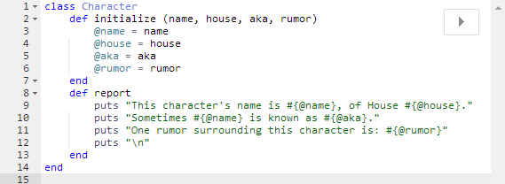
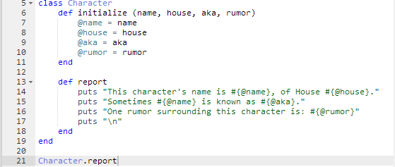
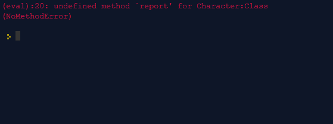
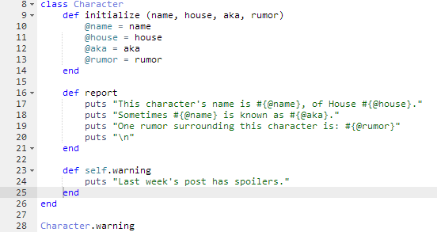

Class Methods
What are they and when should I use them?
To put it simply, class methods are methods that are called on a particular class, unlike instance methods that are called on an instance of a class. Let's take a look at my post last week on classes and when to use them.
Class vs. Instance Methods
There are no class methods present in the Character class above. The initialize method and the report method are both called on an instance of Character, not on Character in general. Let's see what happens when I try to call report directly on Character.
 It gives an error message because there's no report method for the class. If I call the method on an instance of the class though, as seen in last week's post, then it works fine because I'm calling it on an instance, not the class itself.
Creating Class Methods
The clearest way (but not the only way) that you can create a class method is by using self in the definition.
With a bit of simple code like this the clarity is not strictly necessary, but when you or someone else is looking at more complicated code it is helpful to have this class method clearly stated to avoid confusion with instance methods.
When to Use Them
Though how they're written and what they apply to may differ, class methods are called just like any other methods. They're useful for any situation where instance methods would not be possible or would not be better. Class methods can get in the way of object-oriented programming by making things more procedural, but they do have their place, making code shorter and creating fewer objects. Rather like rich food a class method should be enjoyed sparingly when you just have to have it.